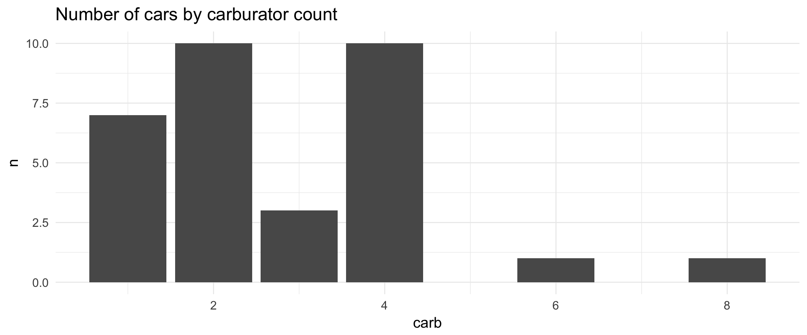

What is ggrough?
ggrough is an R package that converts your ggplot2 plots to rough/sketchy charts, using the excellent javascript roughjs library.
library(ggplot2)
count(mtcars, carb) %>%
ggplot(aes(carb, n)) +
geom_col() +
labs(title="Number of cars by carburator count") + theme_minimal(base_size = 16) -> p
p
How to use
Call get_rough_chart(), using your ggplot2 chart as the first arguments. See the options to customize your output.
Word of caution
ggrough is a work in progress and still has big bugs. Contributions are welcome!
ggrough works “ok” with RStudio Viewer. However you need to redraw your chart everytime you change the size of the Viewer tab and the charts will redraw when you try to copy it via Export -> Save As Image. The latter can be annoying since some roughjs settings can add a lot of randomness.
ggrough doesn’t work well with Rmarkdown files yet. For example, it can only generate if you have multiple chart it overlays them on top of each other.
Under the hood
ggrough is an htmlwidget. It converts your ggplot2 chart to SVG using the package svglite then parse the different elements (<rect>, <path>, <circle>…) to create a chart in a HTML Canvas element1 with roughjs.
An article explaining how ggrough works is in the making, to help potential contributors get started.
Thanks
This package is only possible thanks to the massive work of:
-
Kent Russell — twitter:timelyportfolio and Bob Rudis — twitter:hrbrmstr for the enormous educational content they created or shared about
htmlwidgetandggplot2. -
Preet Shihn — twitter:preetster) and all the contributors of
roughjs. -
Hadley Wickham — twitter:hadleywickham) and all the contributors of
ggplot2. -
Lionel Henry — twitter:_lionelhenry and all the contributors of
svglite
roughjscan also render to SVG. This will be supported byggroughin the future↩